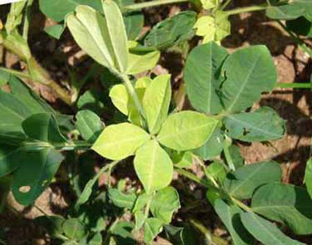

Yellowing of leaves:
A classic sign of sulfur deficiency, leaves may turn yellow, starting at the tips and edges and progressing inward. In severe cases, the entire leaf may turn yellow.
Stunted growth:
Sulfur is essential for cell division and plant development, so a lack of it can result in stunted growth.
Delayed maturity
Plants with sulfur deficiency may take longer to mature and produce fruits or seeds.
Reduced nutrient uptake
Sulfur deficiency can make it harder for plants to absorb other essential nutrients, like nitrogen.
Light green color
The entire plant may appear light green, with young leaves tending to be lighter than older leaves.
Thin stems
Plants may have thin stems and a spindle appearance.
Sulfur is critical for the development of healthy,nutritious crops.
MANAGEMENT MEASURES
Sulfur deficiency in groundnuts can be managed by using fertilizers, organic matter, and crop rotation:
Fertilizers
There are many sulfur-containing fertilizers available commercially, including gradual-release, controlled-release, and water-soluble fertilizers. Some recommend applying sulfur at 70–90 kg per hectare.
Organic matter
Incorporating organic matter like compost or manure into the soil can gradually increase sulfur levels over time.
Crop rotation
Different crops have different sulfur requirements and uptake rates, so rotating crops can help prevent sulfur depletion in the soil.
Soil pH
Maintaining optimal soil pH levels (typically around neutral to slightly acidic) is essential for ensuring adequate sulfur availability for plant uptake
for further details click here